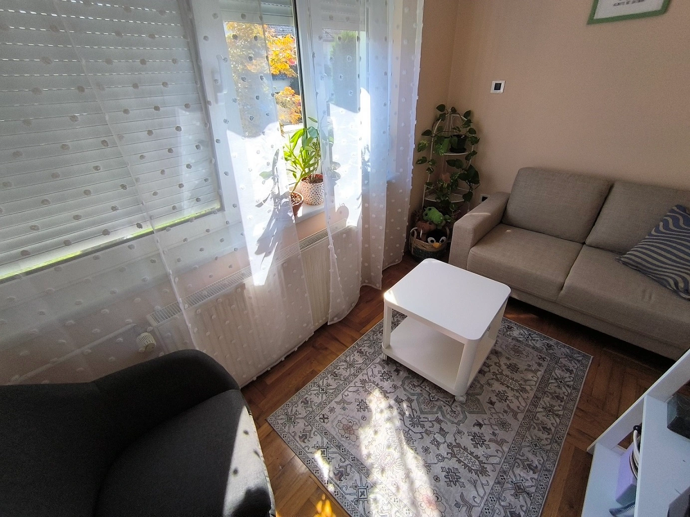

EMDR terapija
EMDR je znanstveno dokazana, vrlo uspješna psihoterapijska metoda u liječenju niza emocionalnih smetnji, posebno onih traumatske prirode.
Ona omogućuje brzu desenzibilizaciju traumatskih sjećanja i kognitivno restrukturiranje koje vodi značajnom smanjenju simptoma (emocionalni stres, ometajuće misli, anksioznost, flashback, noćne more).
Učinkovitost
EMDR je efikasna metoda u tretmanu PTSD i u usporedbi s drugim metodama ima najviši stupanj efikasnosti za tu dijagnostičku kategoriju.
Efikasnost ove metode u tretmanu PTSP-a potvrđena je u Preporukama za kliničku praksu Američkog psihijatrijskog udruženja (2004) te od Zdravstvenog nacionalnog sustava Velike Britanije (2005).
Primjena
Iako je u početku ova metoda bila korištena samo u tretmanu PTSP-a, u zadnje vrijeme koristi se i u tretmanu različitih psihičkih poremećaja kao što su:
- anksiozni poremećaji (npr. panični poremećaj s agorafobijom, različite fobije)
- somatoformni poremećaji
- poremećaji ličnosti
- poremećaji raspoloženja, naročito depresija
- problemi vezani uz samopoštovanje
EMDR se koristi za probleme iz prošlosti, sadašnjosti te za željena ponašanja u budućnosti.
Kako metoda funkcionira
Metoda se bazira na pokretima očima (ili drugim oblicima naizmjenične stimulacije lijevo/desno: naizmjenično tapšanje/lupkanje po rukama, zvučni signali u ušima) zajedno sa slikom traumatskog događaja, negativnim uvjerenjima, emocionalnom patnjom i fizičkim senzacijama.
Ova kombinacija olakšava obradu informacije sve do njenog razrješavanja.
Nakon EMDR-a, neugodna sjećanja postaju manje prijeteća, a neugodne fizičke senzacije slabe. Pozitivna uvjerenja i primjerenija emocionalnost nadopunjuju nove slike.
Prije početka rada s traumatskim slikama, važno je raditi i na klijentovim resursima — pozitivnim slikama i sjećanjima — koji uveliko doprinose pozitivnom ishodu.